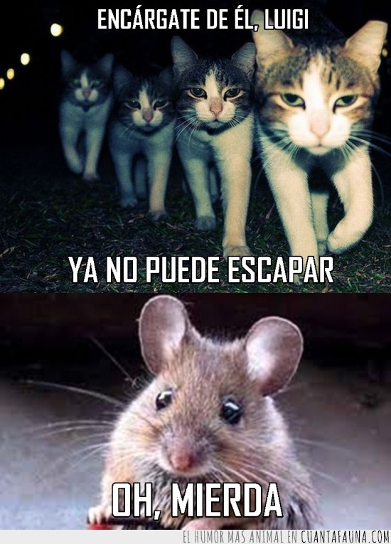
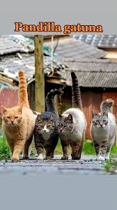
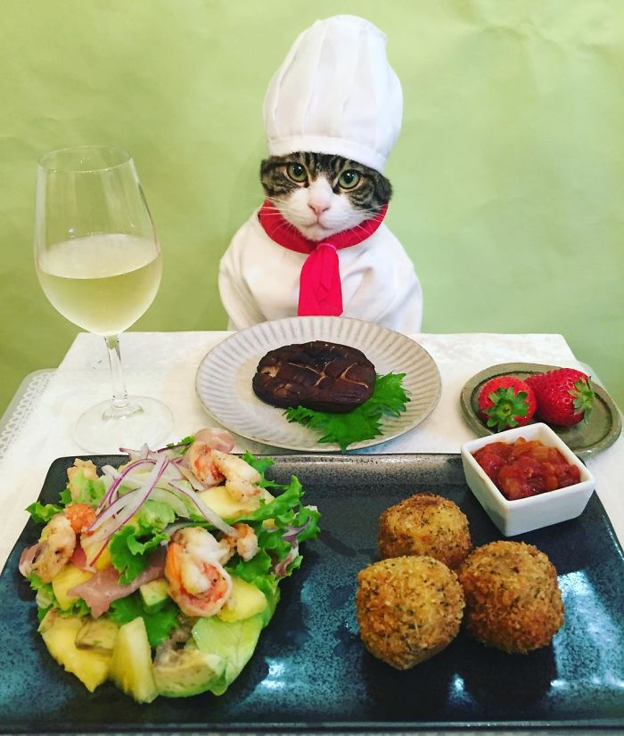
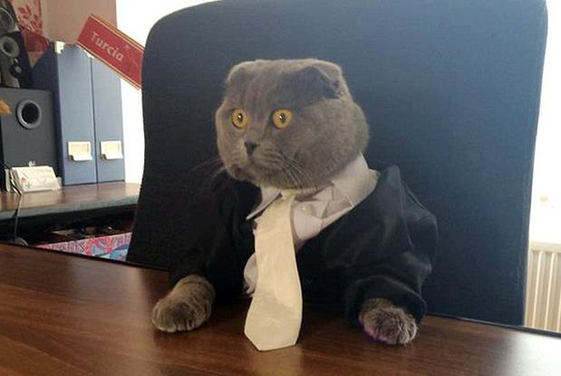
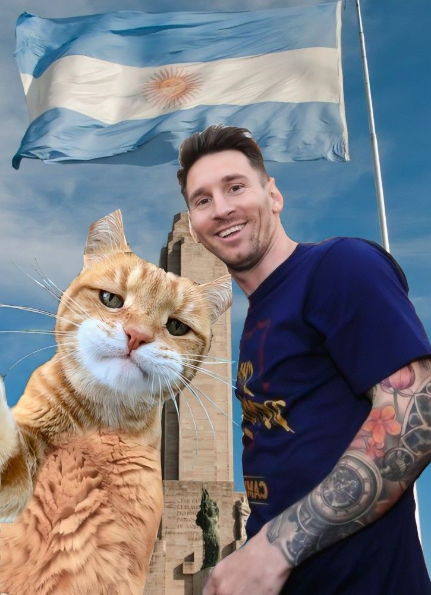
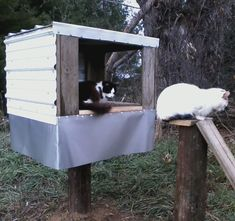

Título destacado
¡Otra Escapada de Infarto! La Familia Arancione Acorrala a Laucha "El Magnate del Pollo"
En un nuevo y audaz intento por atrapar al escurridizo Laucha "El Magnate del Pollo", una pandilla de michis de la familia Arancione estuvo a punto de lograrlo. Conocido por su astucia y su habilidad para evadir incluso las situaciones más desesperadas, Laucha fue acorralado en una antigua bodega, donde los miembros de la familia Arancione creían tenerlo finalmente atrapado.
La pandilla, liderada por Gatto Nero, había planificado cada movimiento con precisión felina. Los michis se posicionaron estratégicamente, bloqueando todas las posibles rutas de escape. Sin embargo, justo cuando parecía que Laucha no tenía salida, el ingenioso roedor utilizó una de sus técnicas más infalibles: el engaño.
Con un movimiento rápido y astuto, Laucha distrajo a los michis con un señuelo de suculento pollo asado, su especialidad, logrando así abrirse paso entre ellos y escapar por una pequeña grieta en la pared. La sorpresa dejó a la pandilla Arancione desconcertada, permitiendo a Laucha una vez más burlar a sus perseguidores.
"Nos subestimó, pero la próxima vez no tendrá tanta suerte", comentó Gatto Nero, con determinación en sus ojos. A pesar de la frustración, los michis de la familia Arancione no se rinden fácilmente, y ya están planeando su próximo movimiento para finalmente atrapar al roedor que ha desafiado su autoridad durante tanto tiempo.
Laucha, por su parte, sigue siendo el rey de la escapatoria, pero la pregunta que todos se hacen es: ¿por cuánto tiempo más podrá seguir burlando a la familia más poderosa de Italia?
Categorias
Michipandillas
Las pandillas de la familia Arancione combaten incansablemente la distribución de droga ilegal en las calles, protegiendo a los michis más vulnerables y manteniendo el orden en el bajo mundo felino de Italia.
Michicocineros
La familia Arancione gestiona restaurantes donde las sobras son generosamente entregadas a los michis sin hogar, garantizando que ningún felino pase hambre en las calles.
Michiempresarios
Los michiempresarios de la familia Arancione son un equipo de élite, enfocados en expandir y gestionar los negocios de la familia con una eficiencia y astucia felinas.
Michideportistas
La familia Arancione colabora con figuras deportivas de renombre mundial, entrenando tanto a humanos como a sus michis. Incluso Messi fue entrenado por Atuna Arancione antes del Mundial de 2022.
Michicientificos
Con un equipo de científicos expertos, la familia Arancione siempre está al día con los avances tecnológicos, asegurando que sus operaciones se mantengan a la vanguardia.
Michihuerfanos
La familia Arancione gestiona casas para gatitos y humanos huérfanos, criándolos con cuidado. Estos jóvenes trabajan para la familia hasta saldar su deuda, garantizando un futuro seguro.